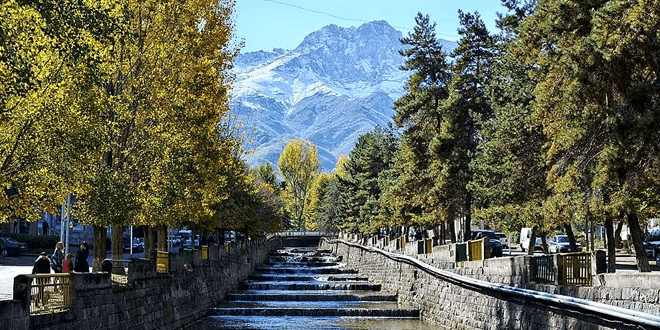

Visit Kapan

Kapan (Armenian: Կապան) is a town at the southeast of Armenia, serving as the administrative centre of the urban community of Kapan as well as the provincial capital of Syunik Province. It is located in the valley of the Voghji River, on the northern slopes of Mount Khustup. According to the 2011 census, the population of Kapan is 43,190, slightly declined from 45,711 in the 2001 census.[2] Kapan is the most populous town in the Syunik Province and the entire region of southern Armenia. However, the current population of the town is around 34,600 as per the 2016 official estimate. The town was known as Ghapan (Armenian: Ղափան) during the Soviet period, derived from its historical name Kapan.